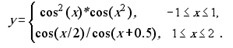
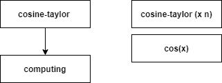
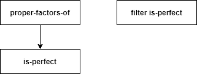
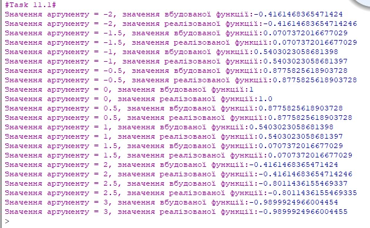
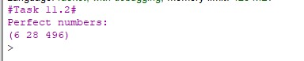

Лабораторна робота №2
Тема: Рекурентні співвідношення для тригонометричних, експоненціальних функцій та ланцюгові дроби
Завдання:
11.1.Обчислити значення функції у, розвинувши функцію cos(x) у ряд Тейлора. Аргумент х змінюється від -2 до 3 з кроком 0.5. Визначити похибку
11.2 Ввести з клавіатури натуральне число n . Необхідно отримати всі досконалі числа, менші за n . Досконалим називається число, значення якого дорівнює сумі всіх його дільників
Опис алгоритму роботи програми 11.1:
- Отримуємо число n
- Створюємо функцію для розкладу cos(x) в ряд Тейлора
- Перевіряємо, чи i > n
- Якщо i > n, виводимо result
- Якщо i < n, обчислюємо значення функції cos(x)
- Викликаємо реалізовану функцію
- Виводимо результат
- Викликаємо вбудовану функцію cos(x)
- Виводимо результат
Опис алгоритму роботи програми 11.2:
- Отримуємо список чисел в заданому діапазоні
- Перевіряємо чи остача від ділення цього числа на х =0
- Якщо так, додаємо в список
- Якщо ні, не додаємо таке число в список
- Створюємо функцію для перевірки чи число є досконалим
- Викликаємо функцію
- Задаємо діапазон чисел для яких зійснюємо перевірку
- Виводимо результат
Структура програми (HIPPO діаграма) 11.1:
Структура програми (HIPPO діаграма) 11.2:
Обгрунтування вибору середовища та мови
В якості середовища було обрано DrRacket версії 8.2 та мова Racket
Вибір середовища та мови був зумовлений наступним:
Код програми:
(define (cosine-taylor x n) ; розкладання функції cos(x) в ряд Тейлора
(let computing ((result 1) (i 1) (odd? #t))
(if (> i n)
result
(computing ((if odd? - +) result (/ (expt x (* 2 i)) (factorial (* 2 i))))
(+ i 1)
(not odd?)))))
(display "Значення аргументу = -2, значення вбудованої функції:")
(cos -2)
(display "Значення аргументу = -2, значення реалізованої функції:")
(cosine-taylor -2.0 100)
(display "Значення аргументу = -1.5, значення вбудованої функції:")
(cos -1.5)
(display "Значення аргументу = -1.5, значення реалізованої функції:")
(cosine-taylor -1.5 100)
(display "Значення аргументу = -1, значення вбудованої функції:")
(cos -1)
(display "Значення аргументу = -1, значення реалізованої функції:")
(cosine-taylor -1.0 100)
(display "Значення аргументу = -0.5, значення вбудованої функції:")
(cos -0.5)
(display "Значення аргументу = -0.5, значення реалізованої функції:")
(cosine-taylor -0.5 100)
(display "Значення аргументу = 0, значення вбудованої функції:")
(cos 0)
(display "Значення аргументу = 0, значення реалізованої функції:")
(cosine-taylor 0.0 100)
(display "Значення аргументу = 0.5, значення вбудованої функції:")
(cos 0.5)
(display "Значення аргументу = 0.5, значення реалізованої функції:")
(cosine-taylor 0.5 100)
(display "Значення аргументу = 1, значення вбудованої функції:")
(cos 1)
(display "Значення аргументу = 1, значення реалізованої функції:")
(cosine-taylor 1.0 100)
(display "Значення аргументу = 1.5, значення вбудованої функції:")
(cos 1.5)
(display "Значення аргументу = 1.5, значення реалізованої функції:")
(cosine-taylor 1.5 100)
(display "Значення аргументу = 2, значення вбудованої функції:")
(cos 2)
(display "Значення аргументу = 2, значення реалізованої функції:")
(cosine-taylor 2.0 100)
(display "Значення аргументу = 2.5, значення вбудованої функції:")
(cos 2.5)
(display "Значення аргументу = 2.5, значення реалізованої функції:")
(cosine-taylor 2.5 100)
(display "Значення аргументу = 3, значення вбудованої функції:")
(cos 3)
(display "Значення аргументу = 3, значення реалізованої функції:")
(cosine-taylor 3.0 100)
; Task 11.2
(define (proper-factors-of n)
(filter
(lambda (x) (= 0 (modulo n x)))
; n виключено
(sequence->list (in-range 1 n))))
(define (is-perfect? n)
(and
(> (length (proper-factors-of n)) 1)
(= (apply + (proper-factors-of n)) n)))
(display "#Task 11.2#\n")
(display "Perfect numbers:\n")
(display
(filter is-perfect?
(sequence->list (in-range 1000)))) ;задаємо межі списком, в якому шукаємо досконалі числа
(newline)
Скріншоти результатів:

Висновки:
В ході виконання даної лабораторної роботи було опановано теоретичні основи застосування рекурентних співвідношень для обчислення тригонометричних, експоненціальних, степеневих функцій
А також, розроблено програми функціональними мовам програмування для обчислення їх значень, на прикладі вирішення наступних завдань: